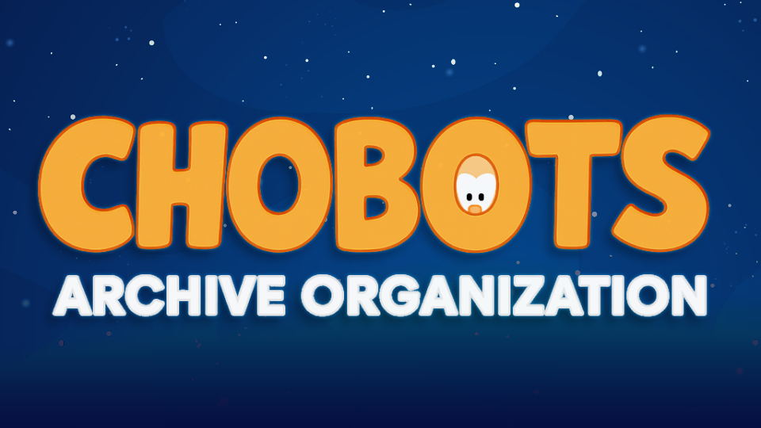

Welcome to Chobots.org
Chobots Archive & Development Hub

What is Chobots?
Chobots was a family‑friendly MMO launched in the late 2000s where players took on the role of colourful alien beings exploring floating cities in space. The game encouraged creativity and community — players could chat, play mini‑games, complete quests, adopt pets and decorate their own homes. Although the official game shut down in 2011, its spirit lives on through private servers, remakes and fan projects.
Our mission
The Chobots Archive Organization exists to preserve and document everything related to the original game — from source code and assets and historical articles. At the same time, we’re making development easier for new contributors by providing a clean codebase, up‑to‑date documentation and modern deployment tools.
- Preservation: We maintain a complete snapshot of the original Chobots (.com) version in our GitHub repositories, fix security issues and make it easy to spin up a local instance.
- Community: We welcome fans, historians and developers alike. If you’d like to help, check out our GitHub organization and join the discord!
Quick links
- 🔗 GitHub Organization: github.com/Chobots
Explore the source code, report issues or contribute to the repositories. - 📘 Chobots Wiki (Legacy): chobots.miraheze.org
The original encyclopedic resource maintained by Brock Sexton. - 🚀 Discord: Join our Guild to find old friends, reminisce, and share old stories. — Join the Discord.
Development & contribution
If you’re interested in running or modifying Chobots yourself:
- Clone the source from our GitHub repository.
- Consult the Getting Started Guide to install the Game and Server.
- Consult the Getting Started Guide to prep and install.
Want to contribute? Fork the repository, submit a pull request or open an issue. We particularly welcome improvements to documentation, bug fixes and new tooling for easier deployment.
Contributors
We’re grateful to everyone keeping Chobots alive! Below is a list of some notable mentions who have contributed in some way to the project.
| Name / Handle | Role |
|---|---|
| BrockSexton | Project lead, archiving |
| community | Wiki editors & documentation |
| developers | Code cleanup & security fixes |
GitHub Contributors
These users bave directly contributed in some way to the Wiki via our GitHub Organization.
format = table
min_commits = 1
Thank you for visiting Chobots.org. Whether you’re here for nostalgia or to tinker under the hood, we hope you find this site useful. Feel free to star our repositories and share your memories with the community!